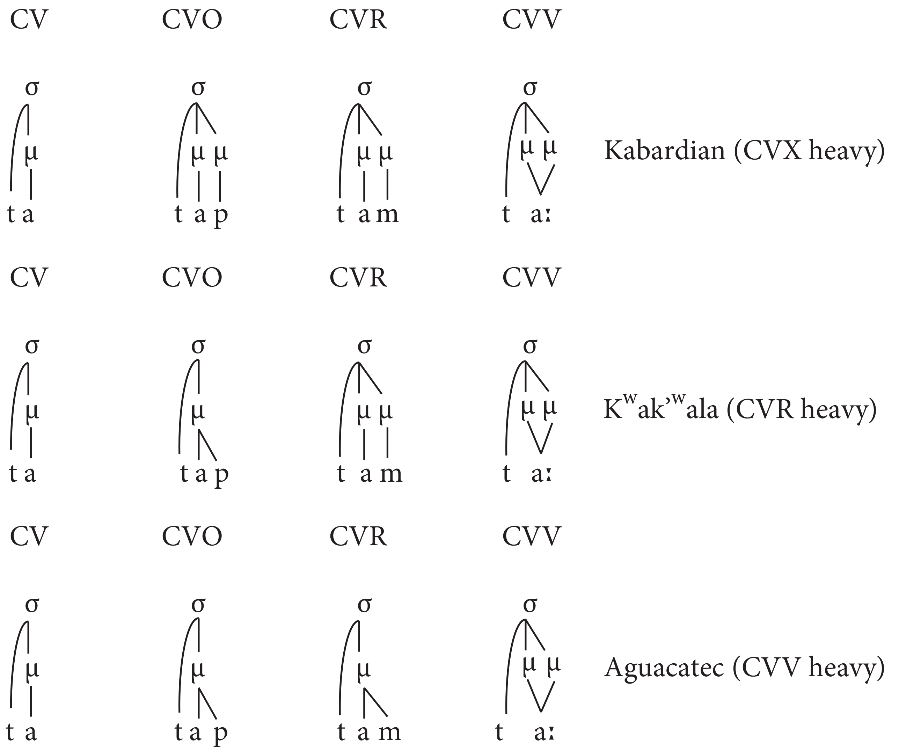

6 Word-prosodic units
6.1 Suprasegmentals
We spent a lot of time talking about segmental level of a language (vowel and consonants). In this chapter we will try to grasp some suprasegmental features that superimposed on the syllable level or even word level. Here is the list of some suprasegmental units:
- stress
- tone
- intonation
- rhythm
- pauses
6.2 Stress
Stress refers to greater prominence associated with certain syllables in a word and can be manifested with
- increased duration
- higher fundamental frequency
- increased intensity
Descriptive typology of stress:
- predictable stress
- location of syllable in a word (“weight-insensitive”), see WALS chapter 14 by (Goedemans and Hulst 2013a)
- structure of syllables (“weight-sensitive”) see WALS chapters 15 and 16 by (Goedemans and Hulst 2013c, 2013b)
- Hierarchy of weight for nucleus: Low V > Mid V > High V > Central V (after (M. Gordon 2007))
- Hierarchy of weight for rime: VVC > VV > VR > VO > V (after (M. Gordon 2007))
- lexically/morphologically motivated
Weight-sensitive systems led to the creation of Moraic Theory (Hyman 1985), based on (M. K. Gordon 2016):

There is a list of works in (M. K. Gordon 2016) that provide some phonetic underpinnings of syllable weight (Broselow, Chen, and Huffman 1997; Ahn 2000; M. Gordon 2002, 2005a, 2005b; Ryan 2014).
6.3 Tone
Tone languages use fundamental frequency for contrasting words and its perceptual correlate is pitch. The tone languages are widespread, especially in Africa, Central America, and Southeast Asia (see the WALS chapter by (Maddieson 2013)). In some languages, e.g. Thai and Mandarin, tone carries a high functional load in conveying lexical contrasts, while in others, e.g. Swedish and Koasati, tone plays a more circumscribed role. Like tone, intonation is signaled through differences in fundamental frequency. Unlike tone, however, intonation is used to communicate higher level information not lexically associated with morphemes.